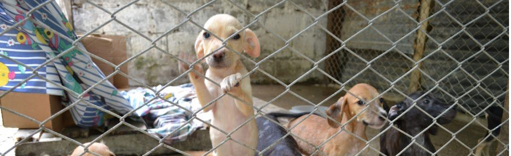

Somos una organización sin ánimo de lucro, legalmente constituida en Medellín (Colombia), que surgió por el amor hacia los animales en estado de vulnerabilidad, con más de 5 años de trayectoria ofreciéndoles una nueva oportunidad para ser felices. Siendo nuestros voluntarios un pilar fundamental para realizar nuestra labor.
Rescatar, rehabilitar y reubicar perros y gatos abandonados, en situación de calle, en peligro y maltratados, además de fomentar la tenencia responsable.
Nuestra Fundación será reconocida a nivel nacional por nuestro trabajo de ayudar a los animales en estado de vulnerabilidad, contaremos con la infraestructura necesaria para lograr impactar mayor número de animales.